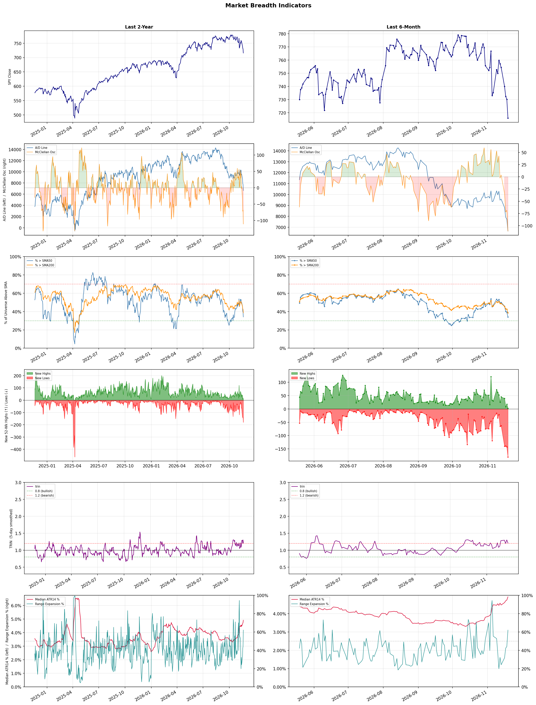

A daily market breadth and sector rotation report for active investors
| Item | Read |
|---|---|
| Regime | Defensive |
| Risk posture | Defensive |
| Universe | 1,309 stocks tracked · 2 new 52-week highs · 30 active swing setups |
| Breadth | only 34.1% of tracked stocks are above SMA50, new lows exceed new highs (180 vs 2), McClellan oscillator (breadth momentum) is negative at -111.1 |
| Leadership | Advertising Agencies, Discount Stores, and Insurance Brokers |
| Weakest groups | Other Industrial Metals & Mining, Uranium, and Electrical Equipment & Parts |
Use this report to prioritize research and chart review; validate entries, stops, liquidity, earnings, and risk before acting.
| Item | Read |
|---|---|
| Primary read | Defensive regime with Defensive risk posture. |
| Research queue | APP, STGW, EVC, MGNI, TTD |
| Leadership focus | Advertising Agencies, Discount Stores, and Insurance Brokers |
| Caution list | Other Industrial Metals & Mining, Uranium, and Electrical Equipment & Parts |
| Review prompt | Check extension risk, chart location, fundamentals, valuation, and earnings before using any research row. |
| Item | Read |
|---|---|
| Primary read | 4 active risk warnings; use screen output as watchlist input only. |
| Bullish screens | none |
| Bearish screens | ARCO, LMND, COIN, IQ, GNW |
| Alerts / levels | Automated trigger, stop, ATR, liquidity, reward/risk, and event-risk levels are pending future enrichment. |
| Review prompt | Open the linked chart, define trigger and invalidation, then check liquidity and event risk independently. |
Risk Posture: Defensive — screen backdrop favors caution; require independent risk review before new exposure
Metric context: McClellan below -50 = elevated selling pressure; below -100 = washout territory. Range Expansion = share of stocks with daily range above their 20-day average. Signal Density = share of tracked names appearing in signal screens.
| Breadth Date | % > SMA50 | % > SMA200 | New Highs | New Lows | McClellan | Median Range | Avg Range | Median ATR14 | Range Expansion | Signal Density |
|---|---|---|---|---|---|---|---|---|---|---|
| 2026-11-19 | 34.1% | 38.6% | 2 | 180 | -111.1 | 4.4% | 5.5% | 4.9% | 62.1% | 9.4% |

Prior comparison date: November 18, 2026
| Metric | Prior | Current | Change |
|---|---|---|---|
| Regime | Defensive | Defensive | unchanged |
| Risk Posture | Defensive | Defensive | unchanged |
| % > SMA50 | 39.1% | 34.1% | -5.0 pts |
| % > SMA200 | 42.4% | 38.6% | -3.8 pts |
| New Highs | 18 | 2 | -16 |
| New Lows | 142 | 180 | -38 |
Top-10 industries entering: Insurance - Property & Casualty and Medical Care Facilities. Top-10 industries leaving: Household & Personal Products and Leisure. New multi-signal long setups: none. New multi-signal short setups: ALB, EXE, FIG, GDS, GGAL, HBAN, IQ, LMND, NRIX, PAGS.
| Status | Tickers | Read |
|---|---|---|
| Added | ALB, EXE, FIG, GDS, GGAL, HBAN, IQ, LMND | New technical screen matches vs prior report. |
| Removed | BABA, BILL, BKD, BRUN, CELC, CRMD, KEP, LTH | No longer present in today's technical screen matches. |
| Still Active | AGNT, ALLO, ARCO, BL, BTDR, COIN, FIS, GNL | Appeared in both current and prior reports. |
| Promoted | none | Model Screen Score improved by at least 15 points. |
| Downgraded | none | Model Screen Score declined by at least 15 points. |
| Direction | Industry | ETF | Prior Rank | Current Rank | Days | Rank Change |
|---|---|---|---|---|---|---|
| Rose | Resorts & Casinos | N/A | 85 | 21 | 42 | +64 |
| Rose | Airlines | N/A | 74 | 11 | 35 | +63 |
| Rose | REIT - Retail | N/A | 77 | 17 | 42 | +60 |
| Rose | Integrated Freight & Logistics | N/A | 68 | 18 | 35 | +50 |
| Rose | Utilities - Regulated Electric | XLU | 61 | 13 | 42 | +48 |
Bull: The Resorts & Casinos sector is experiencing rising relative strength primarily due to positive consumer sentiment and robust earnings reports from key players like Red Rock Resorts and Bally's, as highlighted in recent earnings discussions. The focus on strategic deal-making amidst slower sector growth suggests that companies are positioning themselves for future profitability, which is attracting investor interest and confidence in the industry's long-term prospects. Additionally, the anticipation of strong performance in 2026, as noted in articles from the San Francisco Examiner and The Motley Fool, further supports a bullish outlook for the sector.
Bear: While the Resorts & Casinos sector may currently exhibit rising relative strength, this could be misleading given the broader economic uncertainties and potential headwinds such as inflation and changing consumer spending habits. The focus on strategic deal-making amidst slower sector growth raises concerns about the sustainability of these earnings, as companies may be overextending themselves in a competitive market. Additionally, the optimistic projections for 2026 may not account for potential regulatory challenges and shifts in consumer preferences that could undermine long-term profitability.
Verdict: The Resorts & Casinos sector's rising relative strength is primarily driven by positive consumer sentiment and strong earnings from major players, indicating a robust recovery and strategic positioning for future growth. However, investors should remain cautious of potential economic headwinds, such as inflation and changing consumer spending habits, which could jeopardize the sustainability of earnings and long-term profitability. It is advisable to closely monitor regulatory developments and shifts in consumer preferences that may impact the sector's outlook.
Sources: Google News
Bull: The rising relative strength of the airline industry can be attributed to a robust rebound in travel demand, as highlighted by the significant stock price increases for Delta Air Lines and American Airlines, which rose 5% and 4% respectively due to heightened travel activity. Additionally, despite disappointing earnings from United Airlines, the stock's ability to rise suggests strong investor confidence in the sector's long-term recovery and profitability, further supported by positive sentiment around airline investments noted in multiple articles. This combination of increased consumer demand and optimistic market outlook is driving the industry's upward momentum.
Bear: While the recent stock price increases for Delta and American Airlines may suggest a rebound in travel demand, it's crucial to consider the underlying fundamentals that could undermine this optimism. Disappointing earnings from United Airlines indicate that profitability remains a significant concern, and the overall economic environment—including rising fuel costs, potential recessionary pressures, and labor disputes—could dampen consumer spending on travel. Furthermore, the airline industry's historical volatility and susceptibility to external shocks raise questions about the sustainability of this upward trend, suggesting that investors may be overly optimistic in their current assessments.
Verdict: The airline industry's recent upward momentum is primarily driven by a robust rebound in travel demand, as evidenced by significant stock price increases for major carriers like Delta and American Airlines. However, investors should remain cautious due to key risks such as disappointing earnings from United Airlines, rising fuel costs, and potential economic downturns, which could undermine profitability and consumer spending in the sector. It is advisable for investors to closely monitor these economic indicators and company earnings reports before making further commitments.
Sources: Google News
Bull: The rising relative strength of the Retail REIT sector can be attributed to a combination of resilient consumer spending and strategic positioning amid economic challenges, as highlighted by Yahoo Finance's mention of retail REITs that are still worth considering despite higher interest rates. Additionally, the positive coverage from Morningstar underscores the potential for growth in this sector, suggesting that investors are increasingly recognizing the value and stability that well-managed retail properties can offer in the current economic climate. These factors indicate a robust outlook for Retail REITs as they adapt to evolving market conditions.
Bear: While the rising relative strength of Retail REITs may seem promising, it is essential to consider the broader economic context, including the potential for a slowdown in consumer spending as inflation persists and interest rates remain high. Furthermore, the retail landscape is increasingly challenged by e-commerce growth and changing consumer preferences, which could undermine the stability and profitability of traditional retail properties. Thus, despite positive coverage, the long-term outlook for Retail REITs may be more precarious than bullish analysts suggest.
Verdict: The Retail REIT sector's rising strength is primarily driven by resilient consumer spending and strategic adaptations to economic challenges, which have bolstered investor confidence in well-managed retail properties. However, a key risk remains the potential slowdown in consumer spending due to persistent inflation and high interest rates, alongside the disruptive impact of e-commerce growth on traditional retail spaces. Investors should closely monitor these economic indicators and evolving consumer trends to gauge the sustainability of this upward momentum.
Sources: Google News
Bull: The Integrated Freight & Logistics sector is experiencing rising relative strength primarily due to positive sentiment and strategic developments within key players in the industry. The upgrade of Expeditors International by Citizens, along with its selection as the logistics provider for Kennedy's significant new 266,000-square-foot center, highlights strong demand and operational growth prospects. Additionally, the broader market interest in transportation stocks, as noted in The Motley Fool's article on the best transportation stocks for 2026, suggests increasing investor confidence in the sector's resilience and profitability moving forward.
Bear: While the rising relative strength in the Integrated Freight & Logistics sector may appear positive, it is essential to consider the potential headwinds that could undermine this momentum. The recent public offering by Eastern International at a low price point indicates underlying financial pressures and dilution concerns, which could negatively impact investor sentiment across the sector. Additionally, the broader market interest in transportation stocks may be driven more by speculative trends rather than fundamental improvements, leaving the sector vulnerable to corrections if economic conditions falter or if operational challenges persist.
Verdict: The Integrated Freight & Logistics sector's rising relative strength is primarily driven by strong demand and strategic advancements among key players, such as Expeditors International's recent upgrade and new contracts, which bolster investor confidence. However, the key risk lies in potential financial pressures exemplified by Eastern International's low-priced public offering, which could signal broader vulnerabilities and lead to a correction if economic conditions worsen or operational challenges arise. Investors should remain cautious and monitor these developments closely.
Sources: Google News
Bull: The rising relative strength of the Utilities - Regulated Electric sector can be attributed to increasing investor confidence in power demand growth, as highlighted by Morningstar's report on utilities stocks rallying amid expectations for heightened energy consumption. Additionally, the positive coverage from Zacks and The Motley Fool regarding the best utility stocks to buy suggests a favorable outlook for the sector, driven by stable cash flows and the essential nature of electric utilities in a transitioning energy landscape. This trend is further supported by broader economic factors, including ongoing investments in renewable energy and infrastructure, which are likely to bolster the sector's growth.
Bear: While the rising relative strength of the Utilities - Regulated Electric sector may suggest increased investor confidence, it is essential to consider the potential headwinds that could undermine this optimism. Regulatory pressures and rising interest rates could significantly impact profit margins and capital expenditures, making it challenging for utilities to maintain stable cash flows. Additionally, the shift towards renewable energy, while beneficial in the long term, may lead to increased volatility and higher costs in the short term as companies navigate the transition and invest in new technologies.
Verdict: The Utilities - Regulated Electric sector is experiencing rising strength due to increasing investor confidence in power demand growth and stable cash flows, bolstered by ongoing investments in renewable energy and infrastructure. However, key risks include regulatory pressures and rising interest rates, which could squeeze profit margins and complicate capital expenditures, potentially undermining the sector's growth trajectory. Investors should monitor these regulatory and economic factors closely while considering positions in this sector.
Sources: Google News
| Direction | Industry | ETF | Prior Rank | Current Rank | Days | Rank Change |
|---|---|---|---|---|---|---|
| Fell | Copper | COPX | 13 | 84 | 42 | -71 |
| Fell | Computer Hardware | XLK | 15 | 83 | 42 | -68 |
| Fell | Semiconductors | SOXX | 10 | 77 | 42 | -67 |
| Fell | Semiconductor Equipment & Materials | SOXX | 14 | 72 | 42 | -58 |
| Fell | Oil & Gas Refining & Marketing | CRAK | 1 | 58 | 42 | -57 |
Bear: While the bull analyst attributes the falling relative strength of copper to market volatility and tariff uncertainties, it's crucial to consider that these factors are symptomatic of deeper structural issues in the copper market. The recent significant drops in major copper stocks indicate a broader lack of investor confidence, driven not only by tariffs but also by potential oversupply concerns and weakening demand from key sectors, such as construction and manufacturing, which could hinder any optimistic long-term projections. Furthermore, the reliance on emerging technologies like AI may not be sufficient to offset the cyclical nature of copper demand, especially if global economic growth continues to falter.
Bull: Copper's relative strength is likely falling due to recent market volatility and uncertainty surrounding tariffs, as highlighted by the Yahoo Finance article discussing significant drops in major copper stocks like Freeport-McMoRan and Teck Resources. This uncertainty, coupled with broader market reactions to potential trade policy changes, has created a challenging environment for copper prices, despite positive long-term outlooks from sources like The Motley Fool and Seeking Alpha that emphasize copper's critical role in emerging technologies such as AI.
Verdict: The recent decline in copper prices is primarily driven by heightened market volatility and uncertainty surrounding tariffs, which have shaken investor confidence and led to significant stock drops among major players like Freeport-McMoRan and Teck Resources. However, the bear case highlights a critical risk: potential oversupply and weakening demand from key sectors such as construction and manufacturing could further exacerbate the downturn, overshadowing any long-term optimism linked to emerging technologies. Investors should closely monitor these demand trends and consider reducing exposure to copper-related assets until clearer signals of recovery emerge.
Sources: Google News
Bear: While the bull analyst points to potential undervaluation and emerging technologies like quantum computing, the sustained decline in the relative strength of the Computer Hardware sector signals deeper issues, such as waning consumer demand and increased competition from alternative technologies. The pivot away from AI hardware stocks, as highlighted by the Business Insider article, suggests that investors are losing confidence in the growth prospects of traditional computing hardware, which could lead to further capital flight from the sector. Additionally, macroeconomic challenges, including supply chain disruptions and rising costs, are likely to exacerbate these issues, making a bearish outlook more plausible.
Bull: The recent decline in the relative strength of the Computer Hardware sector can be attributed to a shift in investor sentiment away from traditional AI hardware stocks, as indicated by the Business Insider headline suggesting a pivot to other sectors. Additionally, the negative performance of computing hardware stocks noted in the Shanghai Composite Index highlights broader market concerns, potentially driven by macroeconomic factors such as supply chain issues or reduced consumer demand. This backdrop creates an opportunity for a bullish case, as the sector may be undervalued amidst these cyclical fluctuations, especially with emerging technologies like quantum computing gaining attention in the investment community.
Verdict: The Computer Hardware sector's decline is primarily driven by a shift in investor sentiment away from traditional AI hardware stocks, compounded by macroeconomic challenges such as supply chain disruptions and declining consumer demand. The key risk highlighted by the bear case is the potential for continued capital flight due to waning confidence in growth prospects, which could further depress valuations in the sector. Investors should closely monitor these trends and consider reallocating resources to sectors with stronger growth potential or emerging technologies.
Sources: Google News
Bear: While the bull analyst points to a shift in investor sentiment and concerns over demand as key factors, it's important to recognize that the semiconductor industry is heavily cyclical and often experiences significant volatility. The current decline may not merely reflect a temporary cash crunch or profit-taking, but rather a fundamental shift in the market as companies reassess their long-term growth prospects in light of rising competition, potential regulatory challenges, and the reality that AI hype may not translate into sustained demand for chips. Furthermore, with analysts like B. Riley cutting price targets, it suggests that the market is beginning to price in a more pessimistic outlook, indicating that the sector may be facing deeper structural issues rather than just short-term fluctuations.
Bull: The recent decline in the relative strength of the semiconductor industry, as highlighted by headlines discussing a "cash crunch" in Big Tech and money rotating out of AI and semiconductor stocks, suggests that investor sentiment is shifting due to concerns over reduced demand for chips amid slowing AI investments. Additionally, the pressure from analysts like B. Riley cutting price targets on semiconductor stocks indicates a broader apprehension about the sector's short-term profitability, exacerbated by the current market volatility and potential overvaluation after a period of rapid growth.
Verdict: The semiconductor industry's current decline is likely driven by a confluence of reduced demand stemming from slowing AI investments and a reassessment of long-term growth prospects amid rising competition and regulatory challenges. The key risk from the bear case is that this downturn may signal deeper structural issues within the sector, suggesting that investors should remain cautious and closely monitor market dynamics and competitive pressures before making significant investments.
Sources: Google News
Bear: While the bull analyst attributes the semiconductor sector's relative strength decline to market volatility and profit-taking, a more critical view suggests that the underlying fundamentals of the industry are deteriorating. The recent headlines, while highlighting potential opportunities, fail to address the significant supply chain challenges, rising production costs, and geopolitical tensions that could stifle growth. Additionally, the hype surrounding AI-related stocks may not translate into sustainable demand, as the market could be overestimating the pace of technological adoption and the actual revenue potential of these companies, leading to further corrections in the sector.
Bull: The Semiconductor Equipment & Materials sector is experiencing a relative strength decline primarily due to recent market volatility, as indicated by the headlines discussing a sell-off in semiconductor stocks, particularly those linked to AI technologies. This downturn may be driven by broader market concerns over inflation and interest rates, which have led to profit-taking in high-growth sectors like semiconductors, despite bullish sentiments highlighted in articles recommending specific stocks poised for recovery amid a global semiconductor spending boom.
Verdict: The semiconductor equipment and materials sector is likely experiencing a downturn due to a combination of profit-taking in high-growth stocks and deteriorating industry fundamentals, including supply chain disruptions and rising production costs. The key risk from the bear case is the potential overestimation of demand driven by AI technologies, which could lead to further corrections if the anticipated growth fails to materialize. Investors should closely monitor geopolitical developments and production cost trends to gauge the sector's recovery potential.
Sources: Google News
Bear: While the bull analyst highlights the impressive gains in oil-refinery stocks, the significant decline in relative strength and the recent sector-wide selling pressures indicate that these stocks may be overextended and vulnerable to a correction. Additionally, the market's mixed sentiment suggests that investors are increasingly wary of potential headwinds such as regulatory changes, fluctuating crude oil prices, and a broader economic slowdown that could adversely impact demand for refined products, undermining the sustainability of this year's gains.
Bull: The Oil & Gas Refining & Marketing sector is experiencing a decline in relative strength primarily due to sector-wide selling pressures, as highlighted by the drop in CVR Energy's stock and the general caution reflected in recent market analyses. Despite the impressive 150% rise in U.S. oil-refinery stocks this year, concerns about sustainability and potential overvaluation may be contributing to the pullback, as suggested by the mixed sentiment in headlines discussing both the impressive gains and the risks ahead for refining stocks.
Verdict: The Oil & Gas Refining & Marketing sector's decline is fundamentally driven by concerns over sustainability and potential overvaluation, as evidenced by recent sector-wide selling pressures and the mixed sentiment surrounding refining stocks. The key risk highlighted by the bear thesis is the possibility of regulatory changes and economic headwinds that could negatively impact demand for refined products, suggesting that investors should exercise caution and consider reducing exposure to this sector until clearer signals of stability emerge.
Sources: Google News
| Industry | Rank | ETF | 7d | 14d | 28d | 42d | Chg 42d | Size | 20D | 60D | Composite | Active Setups |
|---|---|---|---|---|---|---|---|---|---|---|---|---|
| Advertising Agencies | 1 | N/A | 1 | 10 | 41 | 41 | +40 | 7 | 18.9% | 11.8% | 0.926 | 1 |
| Discount Stores | 2 | XRT | 5 | 4 | 3 | 5 | +3 | 7 | 3.9% | 14.2% | 0.925 | 0 |
| Insurance Brokers | 3 | N/A | 9 | 3 | 6 | 27 | +24 | 6 | 2.0% | 1.9% | 0.839 | 0 |
| REIT - Hotel & Motel | 4 | XLRE | 4 | 15 | 8 | 12 | +8 | 9 | 0.3% | 8.5% | 0.837 | 0 |
| Apparel Manufacturing | 5 | N/A | 6 | 1 | 11 | 26 | +21 | 6 | 4.2% | 15.7% | 0.830 | 0 |
| Specialty Retail | 6 | XRT | 3 | 5 | 12 | 25 | +19 | 13 | 4.1% | 13.0% | 0.814 | 1 |
| Restaurants | 7 | N/A | 15 | 12 | 19 | 34 | +27 | 16 | 6.0% | 2.3% | 0.807 | 1 |
| Beverages - Non-Alcoholic | 8 | XLP | 7 | 8 | 20 | 30 | +22 | 7 | 2.5% | 0.1% | 0.786 | 0 |
| Insurance - Property & Casualty | 9 | KIE | 10 | 18 | 16 | 16 | +7 | 8 | -0.3% | 1.6% | 0.777 | 0 |
| Medical Care Facilities | 10 | IHF | 8 | 9 | 13 | 24 | +14 | 9 | 2.1% | 6.4% | 0.773 | 0 |
Rank columns (7d–42d) show the industry's rank that many trading days ago — lower is stronger. Chg 42d = rank change vs 42 trading days ago — positive means the industry moved up. 20D and 60D are the mean stock return within the industry over that period. Active Setups: count of today's swing-trade candidates from this industry appearing across all signal screens.
| Industry | Rank | ETF | 7d | 14d | 28d | 42d | Chg 42d | Size | 20D | 60D | Composite | Active Setups |
|---|---|---|---|---|---|---|---|---|---|---|---|---|
| Other Industrial Metals & Mining | 87 | N/A | 86 | 86 | 85 | 82 | -5 | 21 | -25.5% | -50.3% | 0.012 | 0 |
| Uranium | 86 | URA | 87 | 87 | 87 | 87 | +1 | 6 | -24.3% | -53.3% | 0.018 | 0 |
| Electrical Equipment & Parts | 85 | XLI | 85 | 84 | 86 | 72 | -13 | 12 | -20.7% | -41.7% | 0.057 | 0 |
| Copper | 84 | COPX | 81 | 76 | 63 | 13 | -71 | 6 | -23.3% | -40.8% | 0.058 | 0 |
| Computer Hardware | 83 | XLK | 83 | 82 | 58 | 15 | -68 | 14 | -24.1% | -34.9% | 0.075 | 0 |
| Gambling | 82 | N/A | 76 | 65 | 81 | 84 | +2 | 5 | -16.1% | -33.2% | 0.093 | 0 |
| Gold | 81 | GDX | 80 | 64 | 60 | 52 | -29 | 25 | -15.3% | -34.6% | 0.099 | 0 |
| REIT - Mortgage | 80 | N/A | 84 | 68 | 84 | 86 | +6 | 11 | -13.0% | -29.7% | 0.115 | 0 |
| Internet Content & Information | 79 | N/A | 78 | 69 | 54 | 33 | -46 | 24 | -19.9% | -24.2% | 0.152 | 0 |
| Aerospace & Defense | 78 | ITA | 63 | 77 | 83 | 80 | +2 | 26 | -10.5% | -32.9% | 0.168 | 0 |
Rank columns (7d–42d) show the industry's rank that many trading days ago — lower is stronger. Chg 42d = rank change vs 42 trading days ago — positive means the industry moved up. 20D and 60D are the mean stock return within the industry over that period. Active Setups: count of today's swing-trade candidates from this industry appearing across all signal screens.
These are research candidates from top-ranked stocks, capped at five names per industry to avoid over-concentration. Returns shown (60D, 120D, 250D) are historical — they reflect where prices have already moved, not forward expectations. Extension Risk flags names that may require extra patience or a better entry point. They are not buy signals.
Chart: TV = TradingView chart (opens in browser); PDF = local chart file (if downloaded).
| Ticker | Name | Industry | Industry Rank | Market Cap | 60D Hist | 120D Hist | 250D Hist | Extension Risk | Research Reason | Chart |
|---|---|---|---|---|---|---|---|---|---|---|
| APP | Applovin | Advertising Agencies | 1 | N/A | 23.0% | -38.2% | -27.2% | Constructive | Top-ranked in industry | TV |
| STGW | Stagwell | Advertising Agencies | 1 | N/A | 19.6% | 39.8% | 100.2% | Constructive | Top-ranked in industry | TV |
| EVC | Entravision Communications | Advertising Agencies | 1 | N/A | 14.2% | -1.1% | 268.9% | Constructive | Top-ranked in industry | TV |
| MGNI | Magnite | Advertising Agencies | 1 | N/A | 13.8% | 73.0% | 102.7% | Constructive | Top-ranked in industry | TV |
| TTD | The Trade Desk | Advertising Agencies | 1 | N/A | 11.7% | -37.3% | -62.0% | Constructive | Top-ranked in industry | TV |
| WMT | Walmart | Discount Stores | 2 | N/A | 20.8% | 10.2% | 18.7% | Constructive | Top-ranked in industry | TV |
| BJ | BJ's Wholesale Club Holdings | Discount Stores | 2 | N/A | 18.7% | 25.8% | 22.3% | Constructive | Top-ranked in industry | TV |
| COST | Costco | Discount Stores | 2 | N/A | 14.6% | 16.0% | 23.2% | Constructive | Top-ranked in industry | TV |
| DLTR | Dollar Tree | Discount Stores | 2 | N/A | 6.1% | 25.9% | 42.3% | Constructive | Top-ranked in industry | TV |
| TGT | Target | Discount Stores | 2 | N/A | 2.8% | 37.4% | 107.1% | Constructive | Top-ranked in industry | TV |
| MRSH | Marsh | Insurance Brokers | 3 | N/A | 6.5% | 27.4% | 16.9% | Constructive | Top-ranked in industry | TV |
| BWIN | Baldwin Insurance Group | Insurance Brokers | 3 | N/A | 5.6% | 59.0% | 19.5% | Constructive | Top-ranked in industry | TV |
| AJG | Arthur J. Gallagher | Insurance Brokers | 3 | N/A | 5.0% | 35.5% | 13.6% | Constructive | Top-ranked in industry | TV |
| ARX | Accelerant Holdings | Insurance Brokers | 3 | N/A | 1.0% | 25.1% | 54.6% | Constructive | Top-ranked in industry | TV |
| AON | Aon PLC | Insurance Brokers | 3 | N/A | -6.2% | 3.8% | -3.6% | Lagging | Top-ranked in industry; lagging | TV |
| INN | Summit Hotel Properties Inc | REIT - Hotel & Motel | 4 | N/A | 21.2% | 26.4% | 56.7% | Constructive | Top-ranked in industry | TV |
| APLE | Apple Hospitality REIT Inc | REIT - Hotel & Motel | 4 | N/A | 16.9% | 33.3% | 80.3% | Constructive | Top-ranked in industry | TV |
| PEB | Pebblebrook Hotel Trust | REIT - Hotel & Motel | 4 | N/A | 15.8% | 35.1% | 102.9% | Constructive | Top-ranked in industry | TV |
| DRH | DIAMONDROCK HOSPITALITY CO | REIT - Hotel & Motel | 4 | N/A | 13.4% | 31.2% | 72.0% | Constructive | Top-ranked in industry | TV |
| RLJ | RLJ Lodging Trust | REIT - Hotel & Motel | 4 | N/A | 11.3% | 31.1% | 86.9% | Constructive | Top-ranked in industry | TV |
These are technical screen matches from existing signal files. They are not trade recommendations. Trigger, stop, ATR, liquidity, reward/risk, and event risk still require separate validation until those inputs are available.
Model Screen Score is weighted by signal count, industry rank, freshness, and setup type. It is not a probability of profit, expected return, or suitability rating. Industry cap: max 3 candidates per industry.
Signal glossary: Momentum Pullback = stock in an uptrend that has pulled back 10–30% and shows re-entry conditions. MA Compression = short- and long-term moving averages converging, often preceding a directional move. Three-Day Up/Down = three consecutive closes in the same direction. New 52Wk High/Low = price reached a new annual extreme.
Chart: TV = TradingView chart (opens in browser); PDF = local chart file (if downloaded).
Bearish setups — stocks making new lows or showing persistent downside patterns. Validate carefully before acting.
| Ticker | Industry | Setups | Close | Industry Rank | Signal Count | Model Screen Score | Reason | Chart |
|---|---|---|---|---|---|---|---|---|
| ARCO | Restaurants | New 52Wk Low; Three-Day Down | 6.54 | 7 | 2 | 63 | Multi-signal; new-low weakness | TV |
| LMND | Insurance - Property & Casualty | New 52Wk Low; Three-Day Down | 38.22 | 9 | 2 | 55 | Multi-signal; new-low weakness | TV |
| COIN | Financial Data & Stock Exchanges | New 52Wk Low; Three-Day Down | 108.87 | 23 | 2 | 47 | Multi-signal; new-low weakness | TV |
| IQ | Entertainment | New 52Wk Low; Three-Day Down | 0.55 | 27 | 2 | 40 | Multi-signal; new-low weakness | TV |
| GNW | Insurance - Life | New 52Wk Low; Three-Day Down | 7.69 | 30 | 2 | 40 | Multi-signal; new-low weakness | TV |
| GNL | REIT - Diversified | New 52Wk Low; Three-Day Down | 6.01 | 32 | 2 | 40 | Multi-signal; new-low weakness | TV |
| QDEL | Medical Devices | New 52Wk Low; Three-Day Down | 8.92 | 33 | 2 | 40 | Multi-signal; new-low weakness | TV |
| HTZ | Rental & Leasing Services | New 52Wk Low; Three-Day Down | 1.23 | 41 | 2 | 35 | Multi-signal; new-low weakness | TV |
| ALB | Specialty Chemicals | New 52Wk Low; Three-Day Down | 82.93 | 44 | 2 | 35 | Multi-signal; new-low weakness | TV |
| SQM | Specialty Chemicals | New 52Wk Low; Three-Day Down | 47.85 | 44 | 2 | 35 | Multi-signal; new-low weakness | TV |
| PSEC | Asset Management | New 52Wk Low; Three-Day Down | 1.26 | 45 | 2 | 35 | Multi-signal; new-low weakness | TV |
| PAGS | Software - Infrastructure | New 52Wk Low; Three-Day Down | 7.33 | 47 | 2 | 35 | Multi-signal; new-low weakness | TV |
| RZLV | Software - Infrastructure | New 52Wk Low; Three-Day Down | 0.93 | 47 | 2 | 35 | Multi-signal; new-low weakness | TV |
| BL | Software - Application | New 52Wk Low; Three-Day Down | 24.54 | 51 | 2 | 35 | Multi-signal; new-low weakness | TV |
| BTDR | Software - Application | New 52Wk Low; Three-Day Down | 3.41 | 51 | 2 | 35 | Multi-signal; new-low weakness | TV |
| FIG | Software - Application | New 52Wk Low; Three-Day Down | 16.26 | 51 | 2 | 35 | Multi-signal; new-low weakness | TV |
| ALLO | Biotechnology | New 52Wk Low; Three-Day Down | 0.67 | 52 | 2 | 35 | Multi-signal; new-low weakness | TV |
| NRIX | Biotechnology | New 52Wk Low; Three-Day Down | 13.60 | 52 | 2 | 35 | Multi-signal; new-low weakness | TV |
| SRPT | Biotechnology | New 52Wk Low; Three-Day Down | 14.17 | 52 | 2 | 35 | Multi-signal; new-low weakness | TV |
| GGAL | Banks - Regional | New 52Wk Low; Three-Day Down | 26.07 | 54 | 2 | 35 | Multi-signal; new-low weakness | TV |
| HBAN | Banks - Regional | New 52Wk Low; Three-Day Down | 14.71 | 54 | 2 | 35 | Multi-signal; new-low weakness | TV |
| OI | Packaging & Containers | New 52Wk Low; Three-Day Down | 4.28 | 56 | 2 | 35 | Multi-signal; new-low weakness | TV |
| JMIA | Internet Retail | New 52Wk Low; Three-Day Down | 2.50 | 57 | 2 | 35 | Multi-signal; new-low weakness | TV |
| SE | Internet Retail | New 52Wk Low; Three-Day Down | 65.94 | 57 | 2 | 35 | Multi-signal; new-low weakness | TV |
| EXE | Oil & Gas E&P | New 52Wk Low; Three-Day Down | 82.44 | 61 | 2 | 25 | Multi-signal; new-low weakness | TV |
| FIS | Information Technology Services | New 52Wk Low; Three-Day Down | 25.94 | 62 | 2 | 25 | Multi-signal; new-low weakness | TV |
| GDS | Information Technology Services | New 52Wk Low; Three-Day Down | 14.76 | 62 | 2 | 25 | Multi-signal; new-low weakness | TV |
| VNET | Information Technology Services | New 52Wk Low; Three-Day Down | 2.19 | 62 | 2 | 25 | Multi-signal; new-low weakness | TV |
| AGNT | Real Estate Services | New 52Wk Low; Three-Day Down | 2.52 | 64 | 2 | 25 | Multi-signal; new-low weakness | TV |
| NMRK | Real Estate Services | New 52Wk Low; Three-Day Down | 9.76 | 64 | 2 | 25 | Multi-signal; new-low weakness | TV |
How To Use This Report
| Use | Purpose |
|---|---|
| Market map | Start with breadth, regime, risk warnings, and what changed since the prior report. |
| Industry scan | Use leading, deteriorating, rising, and declining industries to focus research. |
| Research queue | Treat long-term candidates as names for deeper fundamental, valuation, and chart review. |
| Technical review | Treat bullish and bearish screen matches as watchlist inputs that require independent trigger, stop, liquidity, and event-risk checks. |
| Source follow-up | Use chart links and source files to verify raw inputs before relying on any row. |
What This Report Is Not
| Not | Meaning |
|---|---|
| Investment advice | The report does not evaluate personal objectives, risk tolerance, tax situation, account type, or suitability. |
| Buy/sell recommendation | Named tickers are research candidates or screen matches, not recommendations to transact. |
| Price target | The report does not provide fair value estimates, targets, or expected returns. |
| Trade plan | Trigger, stop, sizing, reward/risk, liquidity, and event-risk review remain separate user work. |
| Performance claim | Model Screen Score is not validated historical performance or a forecast of future results. |
| Item | Note |
|---|---|
| Version | Daily Report Methodology v1 |
| Model Screen Score | Screen-fit rank based on signal count, industry rank, freshness, and setup type. |
| Not predictive proof | The score is not expected return, probability of profit, historical validation, or suitability analysis. |
| Industry ranks | Composite industry ranks use existing daily ranking outputs and historical rank columns when available. |
| Research candidates | Long-term rows are research candidates from ranked stocks and leading industries, with historical returns labeled as historical only. |
| Technical matches | Bullish and bearish rows are screen matches requiring independent chart, trigger, stop, liquidity, and event-risk review. |
| Source | Status | Rows | Path |
|---|---|---|---|
| Market breadth | present | 1254 | breadth_20261119.csv |
| Industry composite rankings | present | 87 | all_industry_composite_20261119.csv |
| Top ranked stocks | present | 88 | top_ranked_composite_20261119.csv |
| All ranked stocks | present | 1309 | all_stocks_composite_sorted_20261119.csv |
| Top momentum pullbacks | present | 1464 | top_momentum_pullbacks_20261119.csv |
| MA compression | present | 1464 | ma_compression_stocks_20261119.csv |
| Three-day up/down | present | 280 | three_day_up_down_stocks_20261119.csv |
| New 52-week members | present | 182 | breadth_new_52wk_members_20261119.csv |
This report is generated from automated technical screens and is for informational and research purposes only. It is not investment advice, a solicitation, or a recommendation to buy or sell any security. Past performance is not indicative of future results. You are solely responsible for your own investment decisions. Consult a licensed financial advisor before acting on any information herein.